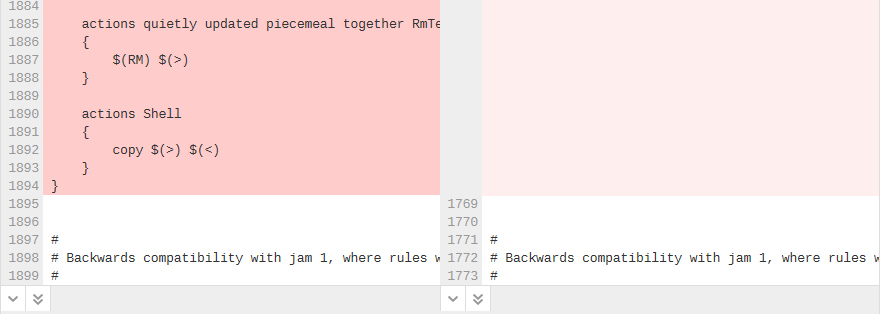

Diffs
Code review page
The information on this page only applies to the original Swarm Code review page. For information about diffs on the new review page, see Files tab. To switch between the original review page and the review page preview, use the Preview toggle switch at the top of the review page.
When you view a changelist or code review, the associated files are presented as diffs (noun) A set of lines that do not match when two files, or stream versions, are compared. A conflict is a pair of unequal diffs between each of two files and a base, or between two versions of a stream.
(verb) To compare the contents of files or file revisions, or of stream versions.
See also conflict., short for differences, showing you how they have changed.
(noun) A set of lines that do not match when two files, or stream versions, are compared. A conflict is a pair of unequal diffs between each of two files and a base, or between two versions of a stream.
(verb) To compare the contents of files or file revisions, or of stream versions.
See also conflict., short for differences, showing you how they have changed.
Swarm supports stream specs in your workspace using the Private editing of streams feature. If a changelist or review contains a stream spec, it will be displayed first in Files with the prefix stream: //, for example: stream://MyStreamDepotName/MyStreamSpecLocationName. A changelist/review can only contain one stream spec.
If you append a changelist with a stream spec to a review that already contains a stream spec, the spec in the changelist replaces the original one in the review. If it is a different spec from the original spec in the review, Swarm cannot display the diff between them and displays File content unchanged.
The review version selectors are used to specify which versions of a review you want to diff (noun) A set of lines that do not match when two files, or stream versions, are compared. A conflict is a pair of unequal diffs between each of two files and a base, or between two versions of a stream.
(verb) To compare the contents of files or file revisions, or of stream versions.
See also conflict., they are located in the Files tab above the list of files.
(noun) A set of lines that do not match when two files, or stream versions, are compared. A conflict is a pair of unequal diffs between each of two files and a base, or between two versions of a stream.
(verb) To compare the contents of files or file revisions, or of stream versions.
See also conflict., they are located in the Files tab above the list of files.
- Left dropdown selector: the base version for the review is selected by default, base is the revision of the file that was checked out of the depot before it was changed for this review. The current review version in the depot, sometimes called Head
 The most recent revision of a file within the depot. Because file revisions are numbered sequentially, this revision is the highest-numbered revision of that file. can be selected, if there are multiple versions of the review a specific version can be selected.
The most recent revision of a file within the depot. Because file revisions are numbered sequentially, this revision is the highest-numbered revision of that file. can be selected, if there are multiple versions of the review a specific version can be selected. - Right dropdown selector: the latest version of the review is selected by default. If there are multiple versions of the review, a specific version of the review can be selected.
If a review consists of one or more Swarm-managed changelists. When comparing versions of a review, Swarm is showing any differences between the selected versions, not the review author's personal changelist. See Internal representation for details.
The first row of buttons above the files allow you to (left to right):
- Show Comments button: toggles the display of comments to inline in files or only in the Comments tab.
- Show Diffs In-Line button: displays all diffs as inline.
- Show Diffs Side-by-Side button: displays all diffs as side-by-side.
- Toggle Show Whitespace button: toggles the display of whitespace characters (such as space, tab, and newline) for all files.
- Toggle Ignore Whitespace button: toggles the highlighting of whitespace changes in all of the file diffs.
- Highlight whitespace changes: makes it easier to identify changes in file types where whitespace is important. This is the default value.
- Ignore whitespace changes: whitespace changes are not highlighted, this makes it easier to see the important changes in file types where whitespace changes are not important.
- Collapse All button: collapses all files
- Expand All button: expands all files. By default this button is disabled if there are more than 10 files in the review. For details, see Expand All Limit.
The default states for the Show Comments, Show Diffs Side-by-Side, Toggle Show Whitespace, and Toggle Ignore Whitespace buttons are set in your user settings, see User Settings.
Each file is presented with an icon indicating whether the file was:
- Added/Branched/Imported
- Edited/Integrated
- Deleted
The file's presentation can be controlled with (left to right):
Only the Show Full Context button is available for stream specs.
- Comments in File icon (only displayed if the file contains comments): indicates that the file contains comments.
- Show In-line button: highlights line additions, modifications, and removals in a single pane.
- Show Side-by-Side button: highlights additions, modifications, and removals in two panes, with the older revisions of the file on the left, and the newer revision on the right.
- Show Whitespace button: makes whitespace characters more visible; spaces show up as dots, tabs show up as arrows that point to a bar, and line endings show up as down-pointing arrows.
- Ignore Whitespace button: toggles the highlighting of whitespace changes in a file, making it easier to identify non-formatting changes. Normally, whitespace is not ignored.
- Toggle Ignore Whitespace button: toggles the highlighting of whitespace changes in the file diff.
- Highlight whitespace changes: makes it easier to identify changes in file types where whitespace is important. This is the default value.
- Ignore whitespace changes: whitespace changes are not highlighted, this makes it easier to see the important changes in file types where whitespace changes are not important.
- Show all diffs button (edited and integrated files only): toggles between displaying all the diffs for the file and only the first few. The limit of what are shown by default is configurable by the administrator (see Max Diffs) and defaults to 1500. If there are fewer than that then this button is hidden.
- Show Full Context button (edited and integrated files only): toggles between displaying only the portions of the file that have changed and the full file.
- Open File button (edited or integrated files only): opens a new browser tab/window display the full file (where possible), provide access to its history, and a button to download the file.
-
Mark file as read button (displayed for code reviews only): helps you (and others) keep track of which files have been reviewed. This is particularly useful when a code review consists of many files.
When clicked, the button color inverts and the associated file is visually muted, to make it easy to distinguish read files from unread files:

If a file has been marked as read, click the button a second time to reset the status to unread.
Viewing a diff
When you view a diff, the changes are highlighted:
- Red indicates lines that have been removed.
- Blue indicates lines that have been modified.
- Green indicates lines that have been added.

Show more context buttons
The diff presentation displays a concise view of where changes were made within a file, showing the changed lines and only a few lines before and after the change. Sometimes, this concise view needs to be expanded to fully understand the context of the change, use the Show More and Show All buttons to display extra lines around the change:
By default, the number of extra lines displayed when you click the Show More Lines Above and Show More Lines Below buttons is 10. This setting can be changed by your Swarm administrator, see More context lines.
The following buttons are not available for stream specs.
- Show All Lines to Start of File
 button (only displayed for the first change in the file): click to show all of the lines up to the start of the file.
button (only displayed for the first change in the file): click to show all of the lines up to the start of the file. - Show More Lines for the Code Below
 button: click to show 10 more lines above the change, the extra lines are displayed in the pane below the button.
button: click to show 10 more lines above the change, the extra lines are displayed in the pane below the button. - Show Entire Section
 button: click to show all of the lines between the changes that are above and below the button, the two changes and the lines between them are displayed in a single pane.
button: click to show all of the lines between the changes that are above and below the button, the two changes and the lines between them are displayed in a single pane. - Show More Lines for the Code Above
 button: click to show 10 more lines below the change, the extra lines are displayed in the pane above the button.
button: click to show 10 more lines below the change, the extra lines are displayed in the pane above the button. - Show All Lines to End of File
 button (only displayed for the last change in the file): click to show all of the lines down to the end of the file.
button (only displayed for the last change in the file): click to show all of the lines down to the end of the file.
Comments
Comments can be displayed within the body of a file and appear immediately below the line the commenter targeted for comment. See Comments for more details.
The comment here icon appears in the line number column whenever there is a comment. Click the icon to display the comment and click the icon again to collapse the comment. This is useful when the comment display is toggled off.
Inline diff view
When viewing a diff in-line, the line numbers for the old version are first, the line numbers for the new version are second, and they are followed by the file content. Some users find it easier to use this view to locate an area that has changed, but they then switch to the side-by-side view to understand the change better. Swarm maintains the scroll position, you do not lose your place in the file after toggling the diff view.
Press n on your keyboard to scroll to the next changed area within a file. Press p to scroll to the previous change.
Per-file toolbar
When a diff contains multiple files, the changes can be taller than your browser window. Swarm keeps the per-file toolbar in view for each file as you scroll, this means that you can identify the file and control its presentation with the buttons on the right of the toolbar.